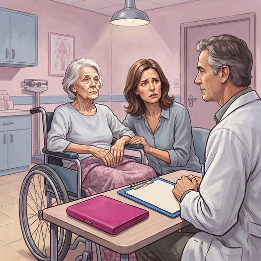

Ferramenta desta aula
SPICT — prognóstico. Roda no navegador, sem cadastro.
Consulta rápida à beira do leito
Condutas, doses e interações.
Referências da aula · 11
- Perguntar à turma se prefere errar para mais ou para menos ao estimar sobrevida, e por quê.
- FONTES DESTE SLIDE: Christakis NA, Lamont EB. BMJ. 2000;320(7233):469-72. (PMID 10678857)PubMed
- Chang YK, Philip J, van der Steen JT, et al. Referral criteria for specialist palliative care for patients with dementia: an international Delphi consensus. JAMA Netw Open. 2025;8(5):e2510298. doi:10.1001/jamanetworkopen.2025.10298.DOI
- Downar J, Goldman R, Pinto R, Englesakis M, Adhikari NKJ. The “surprise question” for predicting death in seriously ill patients: a systematic review and meta-analysis. CMAJ. 2017;189(13):E484-93. PMID 28385893. doi:10.1503/cmaj.160775.PubMedDOI
- Morita T, Tsunoda J, Inoue S, Chihara S. The Palliative Prognostic Index: a scoring system for survival prediction of terminally ill cancer patients. Support Care Cancer. 1999;7(3):128-33. PMID 10335930. doi:10.1007/s005200050242.PubMedDOI
- Fernandes M, Branco TP, Fernandez MCN, et al. Palliative Prognostic Index accuracy of survival prediction in an inpatient palliative care service at a Brazilian tertiary hospital. Ecancermedicalscience. 2021;15:1228. PMID 34158832. doi:10.3332/ecancer.2021.1228.PubMedDOI
- Katz S, Ford AB, Moskowitz RW, Jackson BA, Jaffe MW. Studies of illness in the aged: the index of ADL. JAMA. 1963;185:914-9. PMID 14044222. doi:10.1001/jama.1963.03060120024016.PubMedDOI
- Lawton MP, Brody EM. Assessment of older people: self-maintaining and instrumental activities of daily living. Gerontologist. 1969;9(3):179-86. PMID 5349366.PubMed
- Santana MTEA, Gómez-Batiste X, da Silva LMG, Rivero de Gutiérrez MG. Cross-cultural adaptation and semantic validation of an instrument to identify palliative requirements in Portuguese. Einstein (São Paulo). 2020;18:eAO5539.
- Oken MM, Creech RH, Tormey DC, Horton J, Davis TE, McFadden ET, et al. Toxicity and response criteria of the Eastern Cooperative Oncology Group. Am J Clin Oncol. 1982;5(6):649-55. PMID 7165009.PubMed
- Victoria Hospice Society. Palliative Performance Scale (PPSv2) version 2. Anderson F et al. J Palliat Care. 1996;12(1):5-11.
Documentos oficiais
Leis e publicações do Ministério da Saúde sobre o cuidado da pessoa idosa, de acesso livre.
Abrir os documentos